Find solutions by the work your lab does.
Each application shows the full workflow, the products for every step, and the partner that supplies them — so you can plan a complete setup with one supplier.
Application areas
Eight areas our customers work in. Pick one to see what fits.
ChromatographyHPLC, UHPLC, chiral and GC columns and methods. Cell biology & single-cell technologiesAntibodies, proteins and automated protein analysis.Research reagents & assaysAntibodies, ELISA kits, small molecules and RNAscope™.
Cell biology & single-cell technologiesAntibodies, proteins and automated protein analysis.Research reagents & assaysAntibodies, ELISA kits, small molecules and RNAscope™.
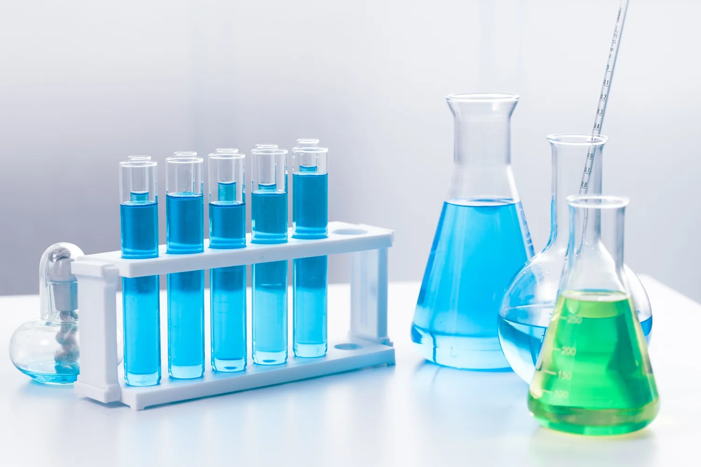
Chromatography consumablesVials, caps, septa, syringe filters and membranes.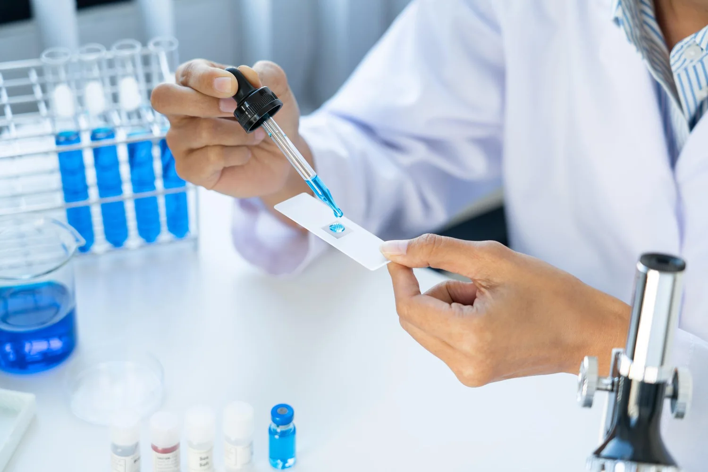
Sample preparationSPE, QuEChERS and immunoaffinity clean-up.Downstream purificationFPLC, prep HPLC, TFF and purification media.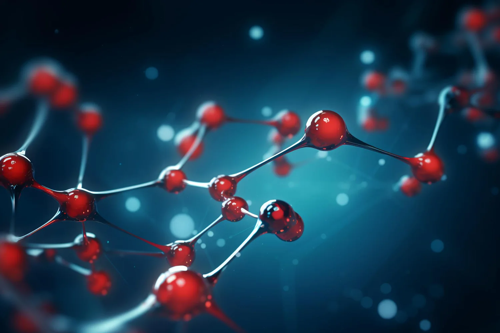
Oligonucleotide & peptide synthesisSynthesizers, prep chromatography and LNP assembly.Protein, peptide & nucleic acid analysisStability, sizing, concentration and charge variants.Cell biology & single-cell technologiesAntibodies, proteins and automated protein analysis.Research reagents & assaysAntibodies, ELISA kits, small molecules and RNAscope™.Twelve workflows, step by step
Each one maps the products and partners to every step.
01 +2Pharma QC
02
+2Pharma QC
02 +2Manufacturing
03
+2Manufacturing
03 +1Biopharma
04+2Biopharma
05
+1Biopharma
04+2Biopharma
05 +3Biopharma
06
+3Biopharma
06 +1Biopharma
07+5Cell & gene therapy
08
+1Biopharma
07+5Cell & gene therapy
08 +1Molecular
09
+1Molecular
09 +2Research
10+2Bioanalysis
11Environment
12+1Food & environment
+2Research
10+2Bioanalysis
11Environment
12+1Food & environment
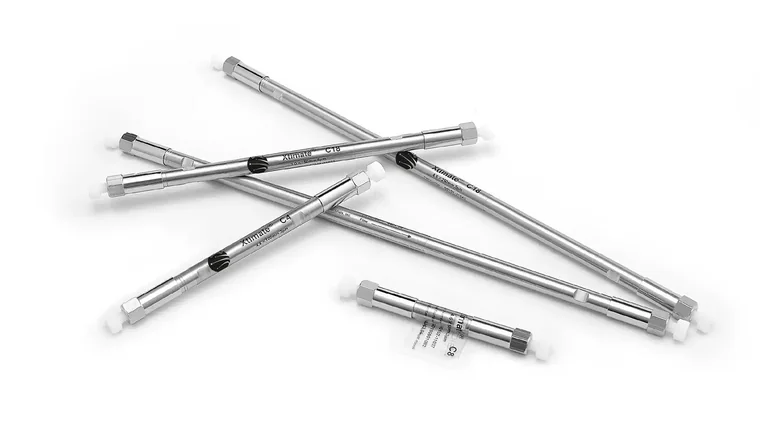
Pharma QC & impurity analysisHPLC, chiral and GC methods, sample prep, consumables and reference standards for release testing.+2Pharma QC
02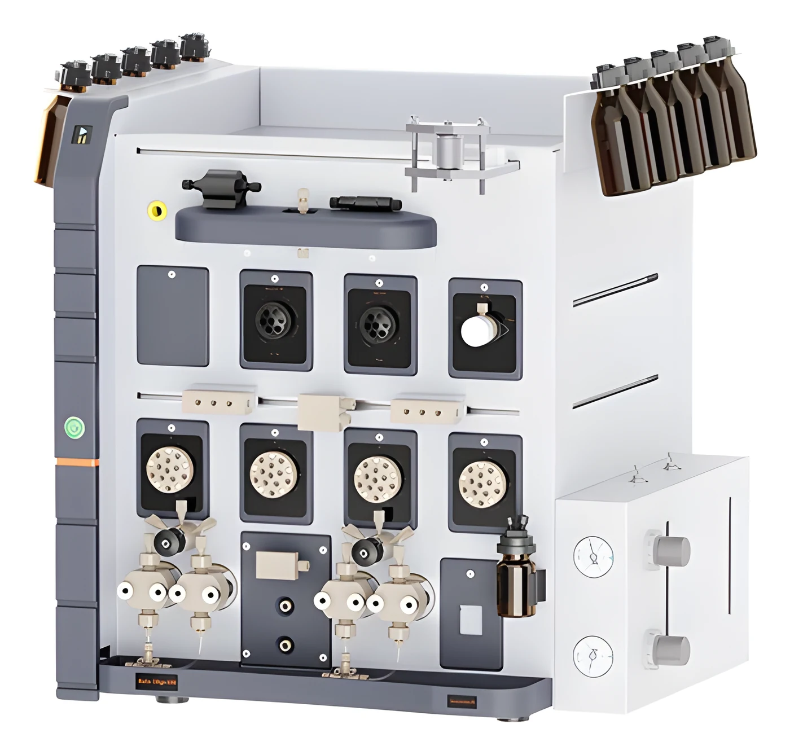
Oligonucleotide, mRNA & peptide manufacturingSynthesis, purification and LNP assembly for nucleic-acid and peptide drugs.+2Manufacturing
03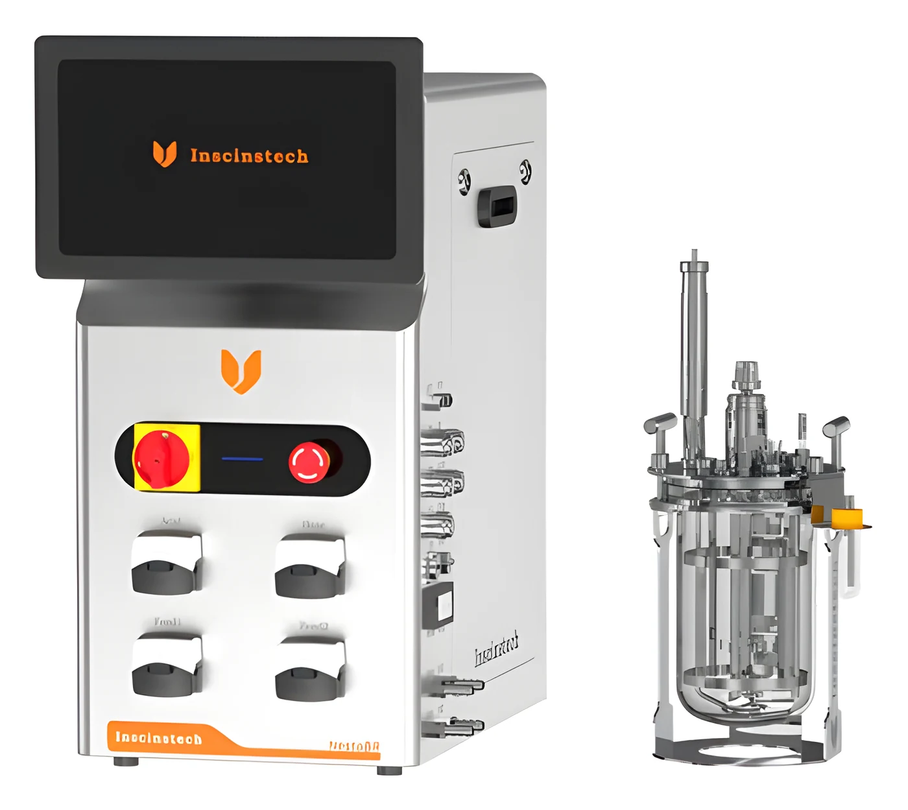
Upstream cell culture (CHO)Media, feeds and bioreactors to raise antibody titre in fed-batch culture.+1Biopharma
04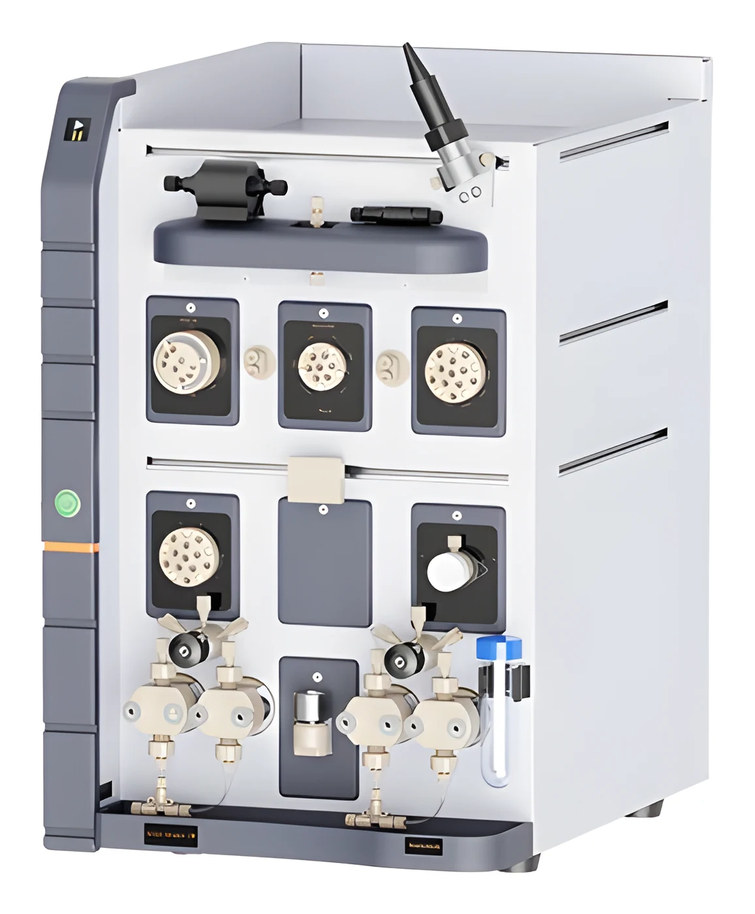
Downstream purificationPurification resins, chromatography systems, prep HPLC and TFF from lab to production.+2Biopharma
05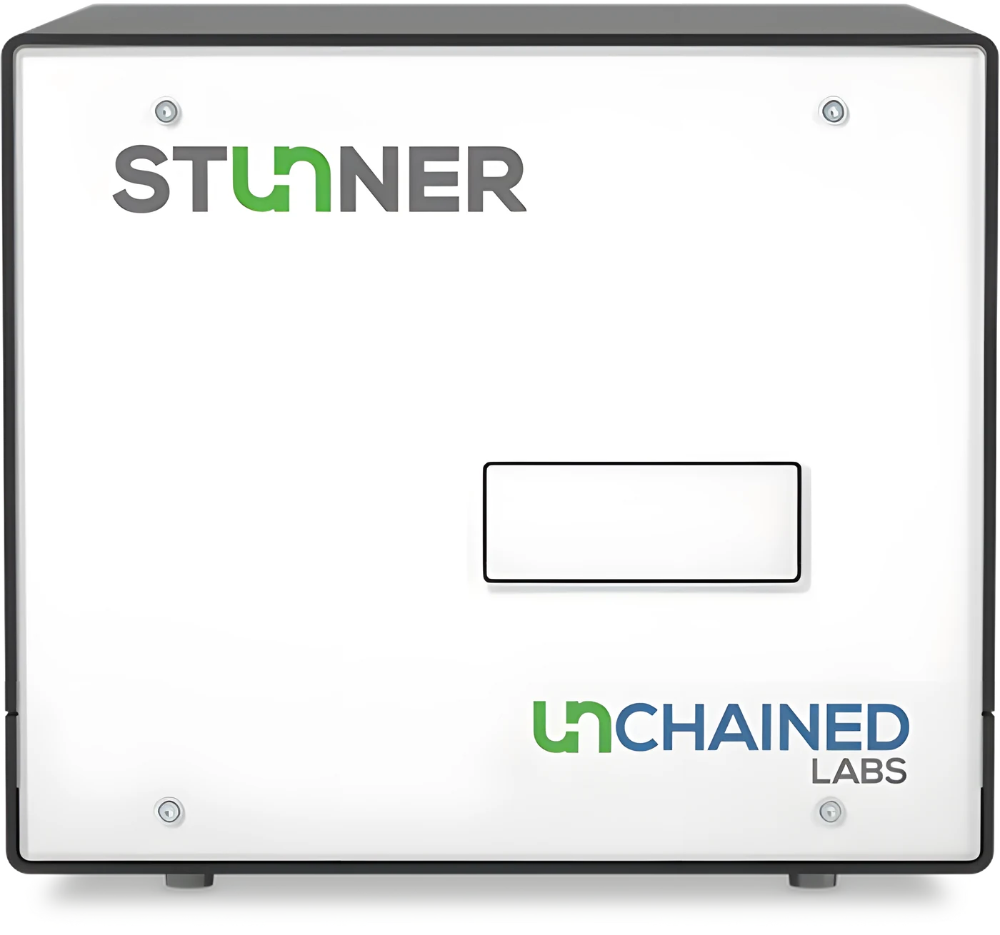
Biologics developability & formulationStability, aggregation, viscosity and charge-variant screening of candidates.+3Biopharma
06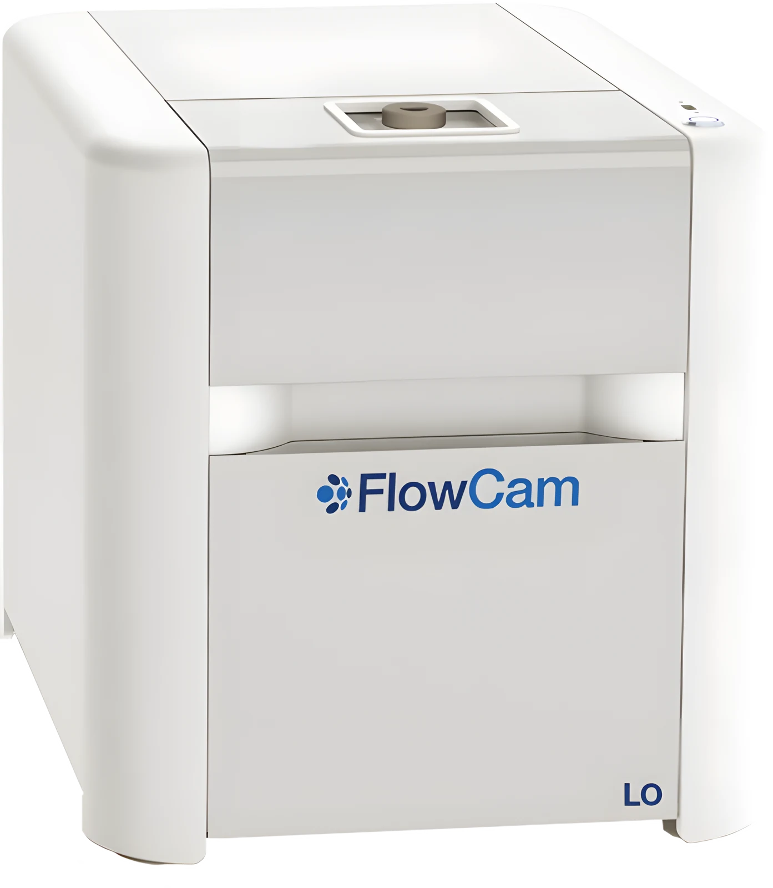
Subvisible particle analysisCount, image and identify particles in injectables and biologics.+1Biopharma
07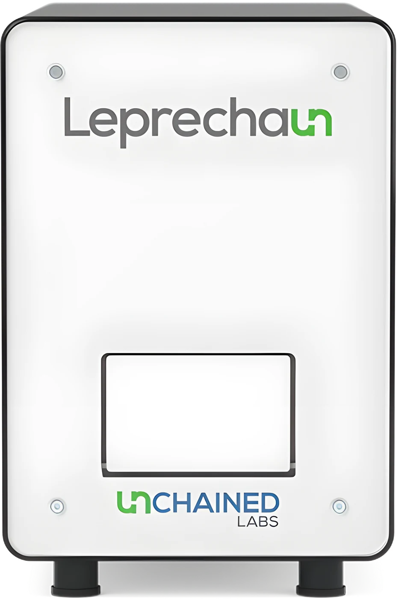
Cell & gene therapy (AAV, lentivirus, LNP)Vector production, titre, full/empty ratio and nanoparticle formulation.+5Cell & gene therapy
08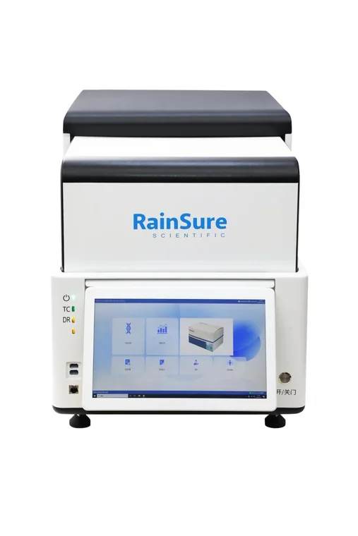
Digital PCR & molecular quantificationAbsolute quantification, rare mutations and residual DNA testing.+1Molecular
09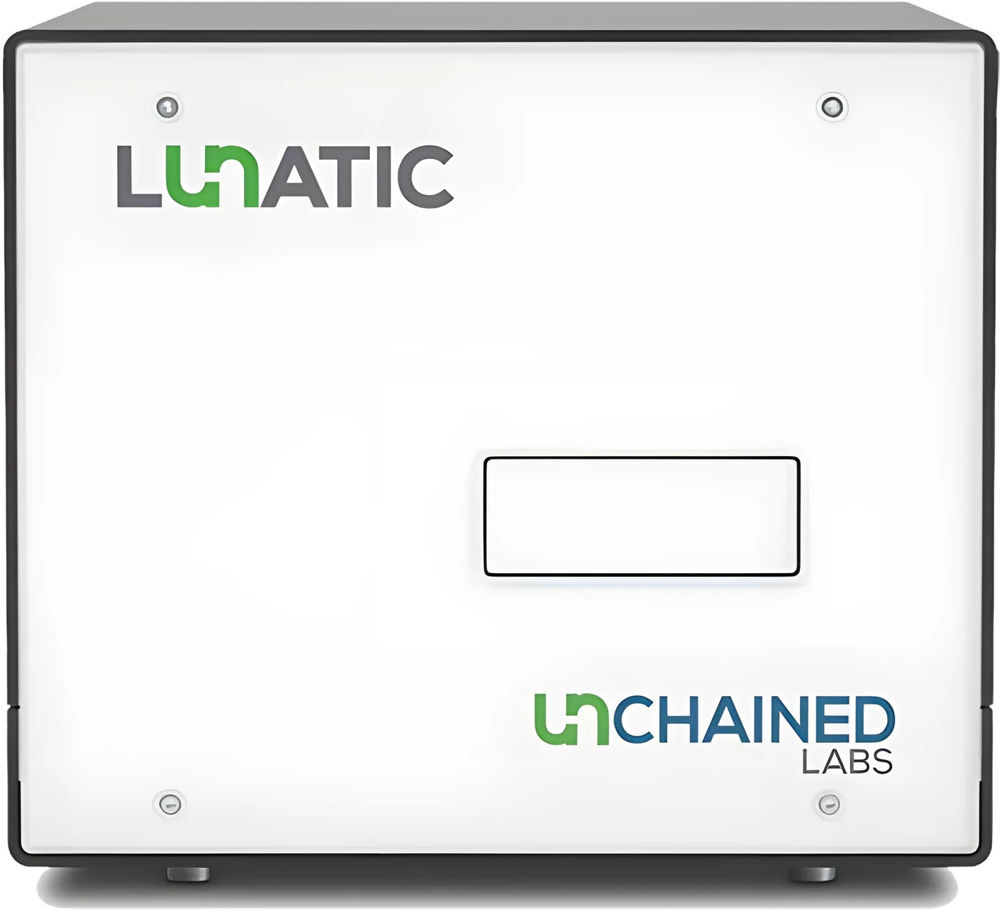
Protein & cell biology researchAntibodies, proteins, immunoassays and spatial biology for discovery labs.+2Research
10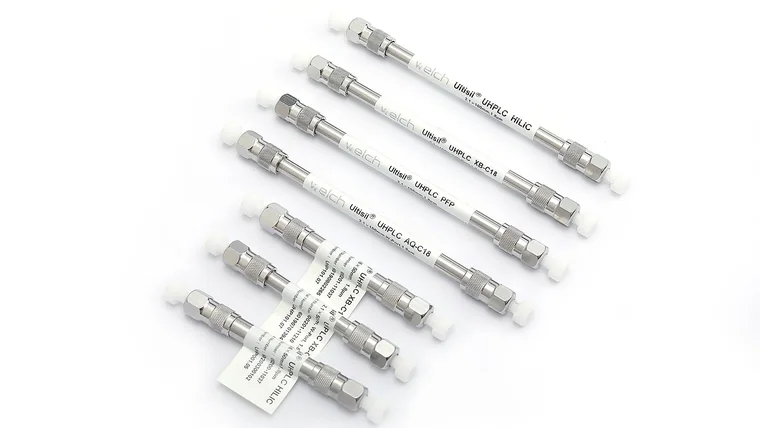
Bioanalysis & LC-MSSensitive LC-MS methods with inert columns and isotope-labelled standards.+2Bioanalysis
11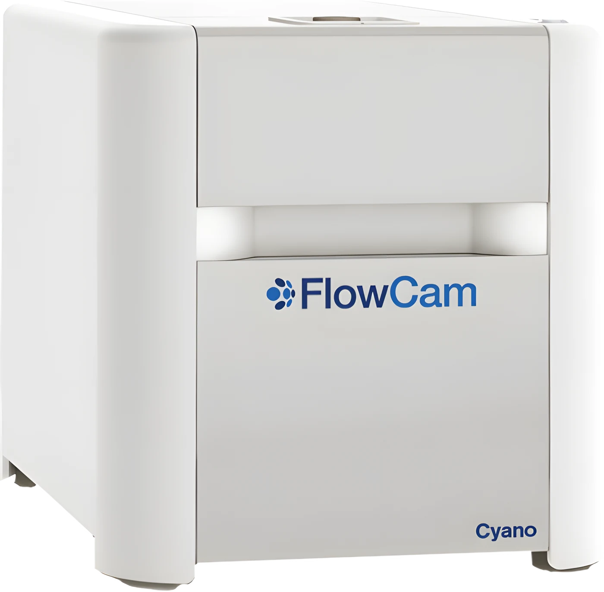
Water & environmental monitoringAlgae, cyanobacteria and plankton imaging for water quality.Environment
12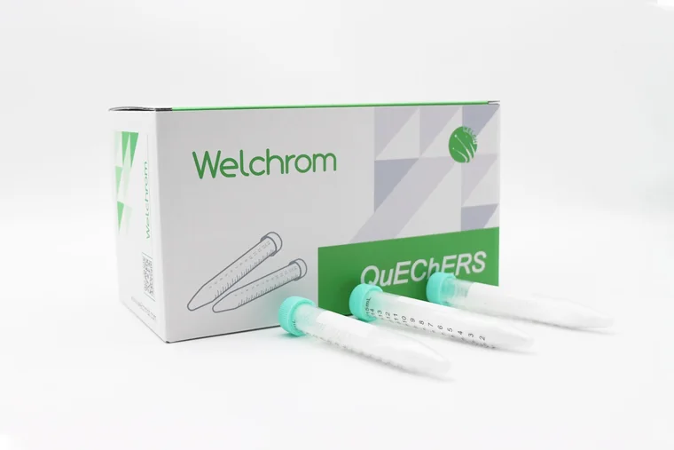
Food safety & environmental residue testingQuEChERS, SPE and immunoaffinity clean-up with GC and HPLC columns for residues.+1Food & environment